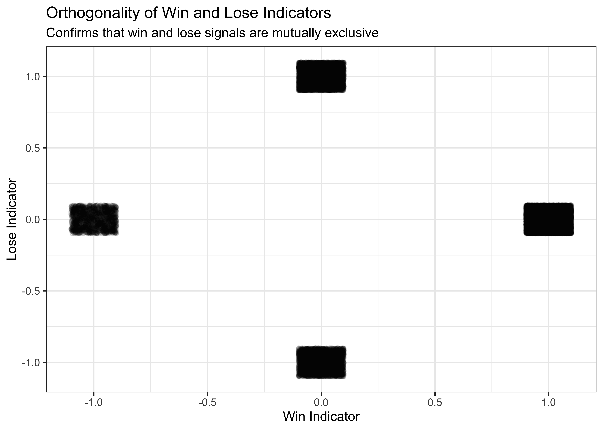
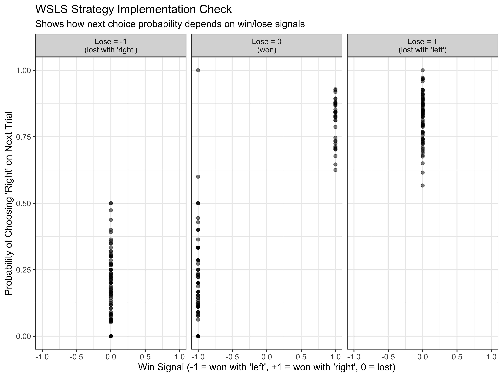
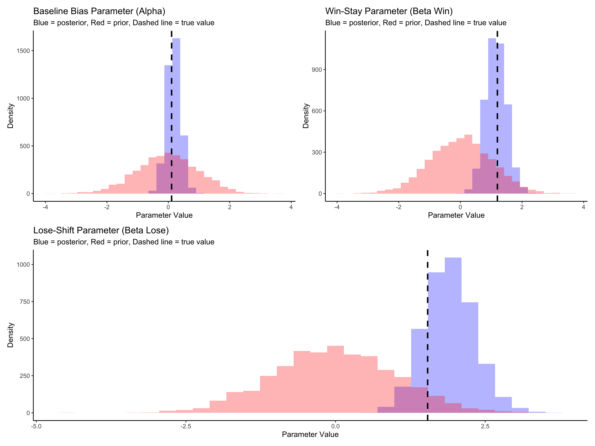
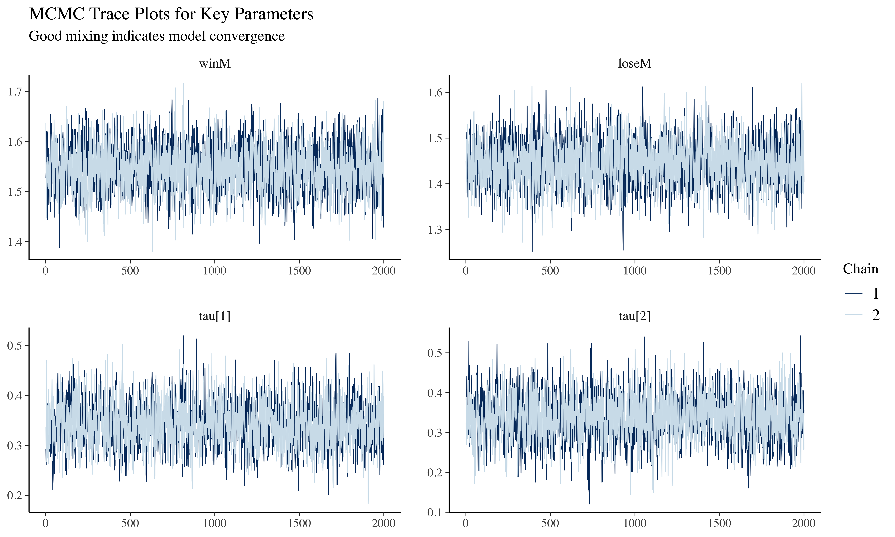
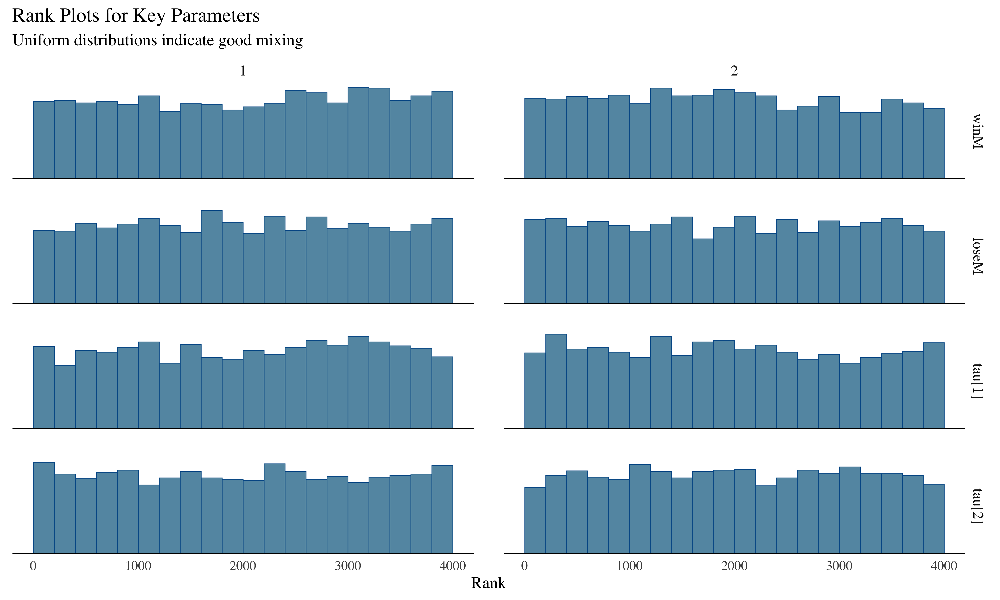
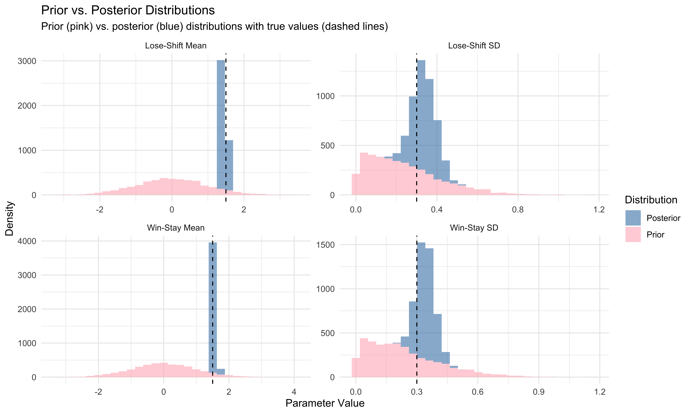
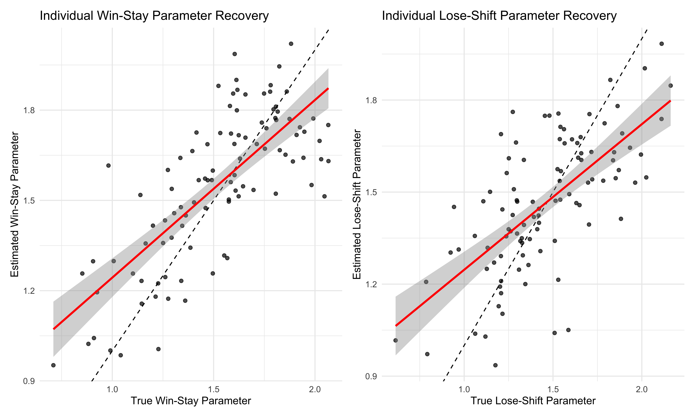
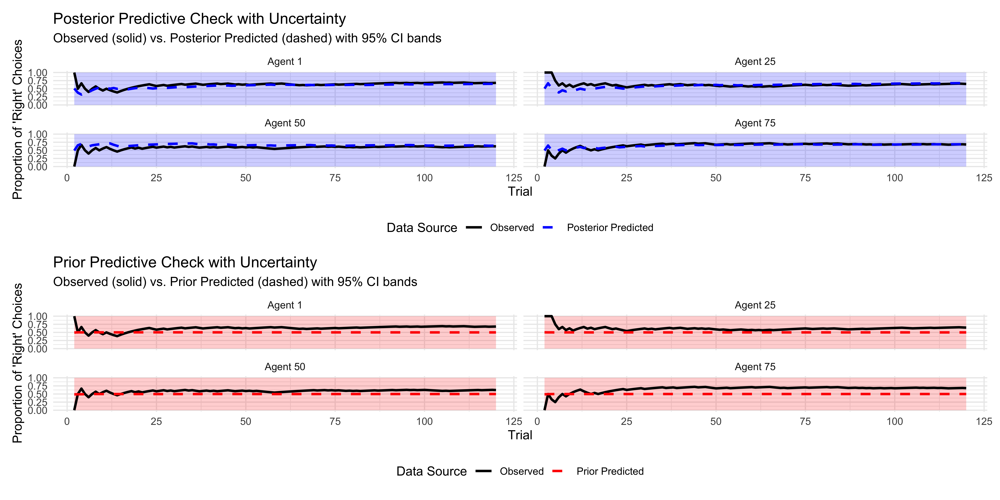
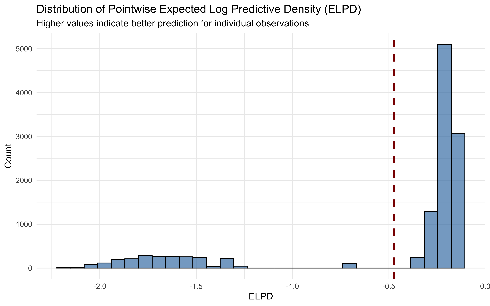

Chapter 10 Win-Stay-Lose-Shift: A Heuristic Decision Strategy
10.1 Introduction
Win-Stay-Lose-Shift (WSLS) represents one of the simplest yet most fascinating decision-making strategies observed in both human and animal behavior. The core principle is intuitive: if an action leads to success, repeat it; if it leads to failure, try something else. Despite its simplicity, this strategy can produce sophisticated behavioral patterns and proves surprisingly effective in many scenarios. In this chapter, we’ll explore WSLS through computational modeling, building on our previous work with random agents. We’ll see how this apparently simple strategy can capture important aspects of learning and adaptation. Through careful implementation and testing, we’ll develop insights into both the strengths and limitations of WSLS as a model of decision-making.
Our exploration will follow several key steps:
Implementing the basic WSLS strategy in code
Testing it against different opponents
Scaling up to multiple agents
Analyzing patterns in the resulting data
The WSLS strategy differs significantly from our previous random agent models. Rather than making choices based on fixed probabilities, a WSLS agent:
Remembers its previous choice
Tracks whether that choice was successful
Uses this information to determine its next move
This creates an interesting form of path dependence - the agent’s choices are shaped by its history of interactions (and we need to ensure that memory is calculated for the correct trial and applied to the following trial).
10.1.1 Loading Required Packages
Let’s begin by loading the packages we’ll need for our analysis:
# Load necessary packages for simulation and analysis
pacman::p_load(tidyverse, # For data manipulation and visualization
here, # For file path management
posterior, # For working with posterior samples
cmdstanr, # For interfacing with Stan
brms, # For Bayesian regression models
tidybayes, # For working with Bayesian samples
loo, # For model comparison
patchwork) # For combining multiple plots10.2 Generating Data: Simulating WSLS Agents
Now we’ll set up a simulation environment where WSLS agents interact with random agents. The parameters we define here will shape our simulation. We’ll create 100 agents who each play 120 trials, allowing us to observe both individual behavior and broader patterns across many interactions.
Our WSLS agent implementation uses a parameterized approach where:
alpha represents a baseline bias toward choosing one option over another
betaWin represents the strength of the “stay” response after a win
betaLose represents the strength of the “shift” response after a loss
noise allows for occasional random deviations from the strategy
This parameterization lets us explore variants of the WSLS strategy with different sensitivities to wins and losses.
# Define simulation parameters
agents <- 100 # Number of agents to simulate
trials <- 120 # Number of trials per agent
# Noise parameter (probability of random choice regardless of strategy)
noise <- 0
# Parameters for random agent (on log-odds scale)
rateM <- 1.4 # Population mean bias for random agent
rateSD <- 0.3 # Population SD of bias
# Parameters for WSLS agent (on log-odds scale)
alphaM <- 0 # Population mean baseline bias
alphaSD <- 0.1 # Population SD of baseline bias
betaWinM <- 1.5 # Population mean win-stay parameter
betaWinSD <- 0.3 # Population SD of win-stay parameter
betaLoseM <- 1.5 # Population mean lose-shift parameter
betaLoseSD <- 0.3 # Population SD of lose-shift parameterNext, we’ll define functions to implement our agent strategies:
# Random agent function: makes choices based on bias parameter (on log-odds scale)
# with possibility of random noise
RandomAgentNoise_f <- function(rate, noise) {
# Generate choice based on agent's bias parameter
choice <- rbinom(1, 1, inv_logit_scaled(rate))
# With probability 'noise', override choice with random 50/50 selection
if (rbinom(1, 1, noise) == 1) {
choice = rbinom(1, 1, 0.5)
}
return(choice)
}
# Win-Stay-Lose-Shift agent function:
# - alpha: baseline bias parameter
# - betaWin: parameter controlling the tendency to repeat winning choices
# - betaLose: parameter controlling the tendency to switch after losing
# - win: indicator of previous win (+1 if won with choice 1, -1 if won with choice 0, 0 if lost)
# - lose: indicator of previous loss (+1 if lost with choice 0, -1 if lost with choice 1, 0 if won)
# - noise: probability of making a random choice
WSLSAgentNoise_f <- function(alpha, betaWin, betaLose, win, lose, noise) {
# Calculate choice probability based on WSLS parameters and previous outcomes
rate <- alpha + betaWin * win + betaLose * lose
# Generate choice based on calculated probability
choice <- rbinom(1, 1, inv_logit_scaled(rate))
# With probability 'noise', override choice with random 50/50 selection
if (rbinom(1, 1, noise) == 1) {
choice = rbinom(1, 1, 0.5)
}
return(choice)
}Now let’s generate the simulation data. We’ll simulate each agent playing against a random opponent, and track their choices, wins, and losses:
# File path for saved simulation results
sim_data_file <- "simdata/W9_WSLS_data.RDS"
# Check if we need to regenerate the simulation data
if (regenerate_simulations || !file.exists(sim_data_file)) {
# Initialize dataframe to store results
d <- NULL
# Loop through all agents
for (agent in 1:agents) {
# Sample individual agent parameters from population distributions
rate <- rnorm(1, rateM, rateSD) # Individual bias for random agent
alpha <- rnorm(1, alphaM, alphaSD) # Individual baseline bias for WSLS agent
betaWin <- rnorm(1, betaWinM, betaWinSD) # Individual win-stay parameter
betaLose <- rnorm(1, betaLoseM, betaLoseSD) # Individual lose-shift parameter
# Initialize vectors to store data for this agent
randomChoice <- rep(NA, trials) # Choices of random agent
wslsChoice <- rep(NA, trials) # Choices of WSLS agent
win <- rep(NA, trials) # Win indicator for WSLS agent
lose <- rep(NA, trials) # Lose indicator for WSLS agent
feedback <- rep(NA, trials) # Whether WSLS agent won (1) or lost (0)
# Generate choices for each trial
for (trial in 1:trials) {
# Random agent makes choice
randomChoice[trial] <- RandomAgentNoise_f(rate, noise)
# WSLS agent makes first choice randomly, then follows strategy
if (trial == 1) {
wslsChoice[trial] <- rbinom(1, 1, 0.5) # First choice is random
} else {
# Use WSLS strategy based on previous outcome
wslsChoice[trial] <- WSLSAgentNoise_f(
alpha, betaWin, betaLose, win[trial - 1], lose[trial - 1], noise
)
}
# Determine outcome (1 = WSLS agent wins, 0 = WSLS agent loses)
feedback[trial] <- ifelse(wslsChoice[trial] == randomChoice[trial], 1, 0)
# Encode win/lose signals for WSLS strategy:
# win: +1 if won with choice 1, -1 if won with choice 0, 0 if lost
win[trial] <- ifelse(feedback[trial] == 1,
ifelse(wslsChoice[trial] == 1, 1, -1),
0)
# lose: +1 if lost with choice 0, -1 if lost with choice 1, 0 if won
lose[trial] <- ifelse(feedback[trial] == 0,
ifelse(wslsChoice[trial] == 1, -1, 1),
0)
}
# Create data frames for this agent
tempRandom <- tibble(
agent,
trial = seq(trials),
choice = randomChoice,
rate,
noise,
rateM,
rateSD,
alpha,
alphaM,
alphaSD,
betaWin,
betaWinM,
betaWinSD,
betaLose,
betaLoseM,
betaLoseSD,
win,
lose,
feedback,
strategy = "Random"
)
tempWSLS <- tibble(
agent,
trial = seq(trials),
choice = wslsChoice,
rate,
noise,
rateM,
rateSD,
alpha,
alphaM,
alphaSD,
betaWin,
betaWinM,
betaWinSD,
betaLose,
betaLoseM,
betaLoseSD,
win,
lose,
feedback,
strategy = "WSLS"
)
# Combine data for both agent types
temp <- rbind(tempRandom, tempWSLS)
# Append to main dataframe
if (agent > 1) {
d <- rbind(d, temp)
} else {
d <- temp
}
}
# Save the simulation results
saveRDS(d, sim_data_file)
cat("Generated new simulation data and saved to", sim_data_file, "\n")
} else {
# Load existing simulation results
d <- readRDS(sim_data_file)
cat("Loaded existing simulation data from", sim_data_file, "\n")
}## Loaded existing simulation data from simdata/W9_WSLS_data.RDS10.3 Data Processing and Initial Visualization
Let’s process our data to create useful variables for analysis and visualization:
# Process data: add lead/lag variables and calculate cumulative statistics
d <- d %>%
group_by(agent, strategy) %>%
mutate(
# Next and previous choices/outcomes
nextChoice = lead(choice), # Next choice (for analysis)
prevWin = lag(win), # Previous win indicator
prevLose = lag(lose), # Previous lose indicator
# Performance metrics
cumulativerate = cumsum(choice) / seq_along(choice), # Running proportion of "right" choices
performance = cumsum(feedback) / seq_along(feedback) # Running proportion of wins
) %>%
mutate(
# identify win and lose as 0 during first trial
prevWin = ifelse(is.na(prevWin), 0, prevWin),
prevLose = ifelse(is.na(prevLose), 0, prevLose)
)Now let’s visualize the choice patterns of our agents to get a sense of their behavior:
# First visualization: Proportion of "right" choices over time for both strategies
p1 <- ggplot(d, aes(trial, cumulativerate, group = agent, color = agent)) +
geom_line(alpha = 0.3) +
geom_hline(yintercept = 0.5, linetype = "dashed") +
ylim(0, 1) +
labs(
title = "Choice Patterns by Strategy",
subtitle = "Each line represents one agent's running proportion of 'right' choices",
x = "Trial",
y = "Proportion of 'Right' Choices"
) +
theme_classic() +
facet_wrap(~strategy) +
theme(legend.position = "none") # Hide individual agent legend for clarity
# Display the plot
p1
The visualization above shows how the choice patterns evolve over time for both the Random and WSLS agents. The random agents show an approximately stable choice pattern (though with individual biases), while the WSLS agents show more varied patterns as they adapt to their opponents.
Let’s also examine how each strategy performs against its opponent:
# Create visualization for performance against opponent
p2a <- ggplot(subset(d, strategy == "Random"),
aes(trial, 1 - performance, group = agent, color = agent)) +
geom_line(alpha = 0.3) +
geom_hline(yintercept = 0.5, linetype = "dashed") +
ylim(0, 1) +
labs(
title = "Performance of Random Agents",
subtitle = "Lower values indicate better performance against WSLS opponents",
x = "Trial",
y = "Proportion of Losses"
) +
theme_classic() +
theme(legend.position = "none")
p2b <- ggplot(subset(d, strategy == "WSLS"),
aes(trial, performance, group = agent, color = agent)) +
geom_line(alpha = 0.3) +
geom_hline(yintercept = 0.5, linetype = "dashed") +
ylim(0, 1) +
labs(
title = "Performance of WSLS Agents",
subtitle = "Higher values indicate better performance against Random opponents",
x = "Trial",
y = "Proportion of Wins"
) +
theme_classic() +
theme(legend.position = "none")
# Combine plots using patchwork
p2a / p2b
The performance plots reveal an interesting pattern. The WSLS agents generally maintain a winning percentage above 0.5 (the dashed line), indicating they can effectively exploit the biases in the random agents. This demonstrates a key strength of the WSLS strategy - it can adapt to and take advantage of predictable patterns in opponent behavior.
10.4 Verifying Model Properties and Assumptions
Let’s check some key properties of our simulation to ensure it’s working as expected:
# Check that win and lose indicators are orthogonal as expected
p3 <- ggplot(d, aes(win, lose)) +
geom_jitter(alpha = 0.1, width = 0.1, height = 0.1) +
labs(
title = "Orthogonality of Win and Lose Indicators",
subtitle = "Confirms that win and lose signals are mutually exclusive",
x = "Win Indicator",
y = "Lose Indicator"
) +
theme_bw()
p3
The plot confirms that our win and lose indicators are mutually exclusive - when the win signal is active (±1), the lose signal is 0, and vice versa. This is important for the proper functioning of our WSLS model.
Now let’s check that the WSLS agents are indeed responding to win and lose signals as expected:
# Check that WSLS agents respond to win/lose signals appropriately
p4 <- d %>%
subset(strategy == "WSLS") %>%
mutate(nextChoice = lead(choice)) %>%
group_by(agent, win, lose) %>%
summarize(heads = mean(nextChoice), .groups = "drop") %>%
ggplot(aes(win, heads)) +
geom_point(alpha = 0.5) +
labs(
title = "WSLS Strategy Implementation Check",
subtitle = "Shows how next choice probability depends on win/lose signals",
x = "Win Signal (-1 = won with 'left', +1 = won with 'right', 0 = lost)",
y = "Probability of Choosing 'Right' on Next Trial"
) +
theme_bw() +
facet_wrap(~lose, labeller = labeller(
lose = c("-1" = "Lose = -1\n(lost with 'right')",
"0" = "Lose = 0\n(won)",
"1" = "Lose = 1\n(lost with 'left')")
))
p4
This plot confirms that our WSLS agents are behaving as expected:
- When win = +1 (won with ‘right’), the agents tend to choose ‘right’ again
- When win = -1 (won with ‘left’), the agents tend to choose ‘left’ again
- When lose = +1 (lost with ‘left’), the agents tend to switch to ‘right’
- When lose = -1 (lost with ‘right’), the agents tend to switch to ‘left’
The variation in probabilities reflects the individual differences in our agents’ parameters.
10.5 Modeling a Single WSLS Agent
Let’s first build a model to infer the parameters of a single WSLS agent. This will help us understand the basic mechanics before scaling up to the multilevel model:
# Select one agent's data for single-agent model
d_a <- d %>% subset(
strategy == "WSLS" & agent == 2 # Arbitrarily select agent #2 Note that trial 1 is already excluded
)
# Prepare data for Stan model
data_wsls_simple <- list(
trials = trials, # trials
h = d_a$choice, # Choices (0/1)
win = d_a$prevWin, # Previous win signal
lose = d_a$prevLose # Previous lose signal
)Now let’s define the Stan model for a single WSLS agent:
# Stan model code for single WSLS agent
stan_wsls_model <- "
functions{
// Helper function for generating truncated normal random numbers
real normal_lb_rng(real mu, real sigma, real lb) {
real p = normal_cdf(lb | mu, sigma); // cdf for bounds
real u = uniform_rng(p, 1);
return (sigma * inv_Phi(u)) + mu; // inverse cdf for value
}
}
data {
int<lower = 1> trials; // Number of trials
array[trials] int h; // Choices (0/1)
vector[trials] win; // Win signal for each trial
vector[trials] lose; // Lose signal for each trial
}
parameters {
real alpha; // Baseline bias parameter
real winB; // Win-stay parameter
real loseB; // Lose-shift parameter
}
model {
// Priors
target += normal_lpdf(alpha | 0, .3); // Prior for baseline bias
target += normal_lpdf(winB | 1, 1); // Prior for win-stay parameter
target += normal_lpdf(loseB | 1, 1); // Prior for lose-shift parameter
// Likelihood: WSLS choice model
// Remember that in the first trial we ensured win and lose have a value of 0,
// which correspond to a fixed 0.5 probability (0 on logit scale)
// since there is no previous outcome to guide the choice
target += bernoulli_logit_lpmf(h | alpha + winB * win + loseB * lose);
}
generated quantities{
// Prior predictive samples
real alpha_prior;
real winB_prior;
real loseB_prior;
// Posterior and prior predictions
array[trials] int prior_preds;
array[trials] int posterior_preds;
// Log likelihood for model comparison
vector[trials] log_lik;
// Generate prior samples
alpha_prior = normal_rng(0, 1);
winB_prior = normal_rng(0, 1);
loseB_prior = normal_rng(0, 1);
// Prior predictive simulations
for (t in 1:trials) {
prior_preds[t] = bernoulli_logit_rng(alpha_prior + winB_prior * win[t] + loseB_prior * lose[t]);
}
// Posterior predictive simulations
for (t in 1:trials) {
posterior_preds[t] = bernoulli_logit_rng(alpha + winB * win[t] + loseB * lose[t]);
}
// Calculate log likelihood for each observation
for (t in 1:trials){
log_lik[t] = bernoulli_logit_lpmf(h[t] | alpha + winB * win[t] + loseB * lose[t]);
}
}
"
# Write the model to a file
write_stan_file(
stan_wsls_model,
dir = "stan/",
basename = "W9_WSLS.stan")## [1] "/Users/au209589/Dropbox/Teaching/AdvancedCognitiveModeling23_book/stan/W9_WSLS.stan"# Compile the model
file <- file.path("stan/W9_WSLS.stan")
mod_wsls_simple <- cmdstan_model(
file,
cpp_options = list(stan_threads = TRUE),
stanc_options = list("O1"),
pedantic = TRUE
)Now let’s fit the model to our single agent’s data:
# File path for saved model results
single_model_file <- "simmodels/W9_WSLS_simple.RDS"
# Check if we need to rerun the model
if (regenerate_simulations || !file.exists(single_model_file)) {
# Fit the model
samples_wsls_simple <- mod_wsls_simple$sample(
data = data_wsls_simple,
seed = 123,
chains = 2,
parallel_chains = 2,
threads_per_chain = 1,
iter_warmup = 2000,
iter_sampling = 2000,
refresh = 1000,
max_treedepth = 20,
adapt_delta = 0.99
)
# Save the results
samples_wsls_simple$save_object(file = single_model_file)
cat("Generated new model fit and saved to", single_model_file, "\n")
} else {
# Load existing results
samples_wsls_simple <- readRDS(single_model_file)
cat("Loaded existing model fit from", single_model_file, "\n")
}## Loaded existing model fit from simmodels/W9_WSLS_simple.RDSLet’s examine the parameter estimates and convergence for the single agent model:
# Display summary statistics for the parameters
summary_stats <- samples_wsls_simple$summary()
print(summary_stats)## # A tibble: 367 × 10
## variable mean median sd mad q5 q95 rhat ess_bulk ess_tail
## <chr> <dbl> <dbl> <dbl> <dbl> <dbl> <dbl> <dbl> <dbl> <dbl>
## 1 lp__ -58.4 -58.1 1.20 0.997 -60.7 -57.1 1.00 1606. 2161.
## 2 alpha 0.172 0.174 0.224 0.228 -0.190 0.532 1.00 1950. 2217.
## 3 winB 1.16 1.15 0.332 0.337 0.628 1.70 1.00 1845. 2075.
## 4 loseB 1.90 1.90 0.413 0.413 1.24 2.60 1.00 2039. 1774.
## 5 alpha_prior -0.0314 -0.0233 0.993 0.978 -1.69 1.60 1.00 3888. 3857.
## 6 winB_prior 0.0165 0.0208 1.00 1.01 -1.62 1.66 1.00 3845. 3867.
## 7 loseB_prior -0.0254 -0.0333 1.02 1.01 -1.71 1.65 1.00 3926. 3728.
## 8 prior_preds[1] 0.484 0 0.500 0 0 1 1.00 3927. NA
## 9 prior_preds[2] 0.490 0 0.500 0 0 1 1.00 3597. NA
## 10 prior_preds[3] 0.491 0 0.500 0 0 1 1.00 3847. NA
## # ℹ 357 more rows# Extract posterior samples and include sampling of the prior
draws_df <- as_draws_df(samples_wsls_simple$draws())
# Create plot grid for parameter recovery
p5a <- ggplot(draws_df) +
geom_histogram(aes(alpha), fill = "blue", alpha = 0.3) +
geom_histogram(aes(alpha_prior), fill = "red", alpha = 0.3) +
geom_vline(xintercept = d_a$alpha[1], linetype = "dashed", size = 1) +
labs(
title = "Baseline Bias Parameter (Alpha)",
subtitle = "Blue = posterior, Red = prior, Dashed line = true value",
x = "Parameter Value",
y = "Density"
) +
theme_classic()
p5b <- ggplot(draws_df) +
geom_histogram(aes(winB), fill = "blue", alpha = 0.3) +
geom_histogram(aes(winB_prior), fill = "red", alpha = 0.3) +
geom_vline(xintercept = d_a$betaWin[1], linetype = "dashed", size = 1) +
labs(
title = "Win-Stay Parameter (Beta Win)",
subtitle = "Blue = posterior, Red = prior, Dashed line = true value",
x = "Parameter Value",
y = "Density"
) +
theme_classic()
p5c <- ggplot(draws_df) +
geom_histogram(aes(loseB), fill = "blue", alpha = 0.3) +
geom_histogram(aes(loseB_prior), fill = "red", alpha = 0.3) +
geom_vline(xintercept = d_a$betaLose[1], linetype = "dashed", size = 1) +
labs(
title = "Lose-Shift Parameter (Beta Lose)",
subtitle = "Blue = posterior, Red = prior, Dashed line = true value",
x = "Parameter Value",
y = "Density"
) +
theme_classic()
# Combine plots
(p5a | p5b) / p5c
The parameter recovery for our single agent looks good. The posterior distributions (blue) are centered around the true parameter values (dashed lines), showing that our model can accurately recover the underlying parameters that generated the agent’s behavior. The posteriors are also substantially narrower than the priors (red), indicating that the data is informative.
[MISSING A FULL PARAMETER RECOVERY]
10.6 Multilevel WSLS Model
Now let’s scale up to model all agents simultaneously with a multilevel (hierarchical) model. This allows us to estimate both population-level parameters and individual differences:
## Prepare data for multilevel model
# Transform data into matrices where columns are agents, rows are trials
d_wsls1 <- d %>%
subset(strategy == "WSLS") %>%
subset(select = c(agent, choice)) %>%
mutate(row = row_number()) %>%
pivot_wider(names_from = agent, values_from = choice)
d_wsls2 <- d %>%
subset(strategy == "WSLS") %>%
subset(select = c(agent, prevWin)) %>%
mutate(row = row_number()) %>%
pivot_wider(names_from = agent, values_from = prevWin)
d_wsls3 <- d %>%
subset(strategy == "WSLS") %>%
subset(select = c(agent, prevLose)) %>%
mutate(row = row_number()) %>%
pivot_wider(names_from = agent, values_from = prevLose)
# Create the data list for Stan
data_wsls <- list(
trials = trials,
agents = agents,
h = as.matrix(d_wsls1[, 2:(agents + 1)]), # Choice matrix
win = as.matrix(d_wsls2[, 2:(agents + 1)]), # Win signal matrix
lose = as.matrix(d_wsls3[, 2:(agents + 1)]) # Lose signal matrix
)Now let’s define the multilevel Stan model:
# Stan code for multilevel WSLS model
stan_wsls_ml_model <- "
functions{
real normal_lb_rng(real mu, real sigma, real lb) {
real p = normal_cdf(lb | mu, sigma); // cdf for bounds
real u = uniform_rng(p, 1);
return (sigma * inv_Phi(u)) + mu; // inverse cdf for value
}
}
// The input (data) for the model.
data {
int<lower = 1> trials; // Number of trials
int<lower = 1> agents; // Number of agents
array[trials, agents] int h; // Choice data (0/1)
array[trials, agents] real win; // Win signals
array[trials, agents] real lose; // Lose signals
}
parameters {
// Population-level parameters
real winM; // Population mean for win-stay parameter
real loseM; // Population mean for lose-shift parameter
// Population standard deviations
vector<lower = 0>[2] tau; // SDs for [win, lose] parameters
// Individual z-scores (non-centered parameterization)
matrix[2, agents] z_IDs;
// Correlation matrix
cholesky_factor_corr[2] L_u;
}
transformed parameters {
// Individual parameters (constructed from non-centered parameterization)
matrix[agents, 2] IDs;
IDs = (diag_pre_multiply(tau, L_u) * z_IDs)';
}
model {
// Population-level priors
target += normal_lpdf(winM | 0, 1); // Prior for win-stay mean
target += normal_lpdf(tau[1] | 0, .3) - normal_lccdf(0 | 0, .3); // Half-normal for SD
target += normal_lpdf(loseM | 0, .3); // Prior for lose-shift mean
target += normal_lpdf(tau[2] | 0, .3) - normal_lccdf(0 | 0, .3); // Half-normal for SD
// Prior for correlation matrix
target += lkj_corr_cholesky_lpdf(L_u | 2);
// Prior for individual z-scores
target += std_normal_lpdf(to_vector(z_IDs));
// Likelihood
for (i in 1:agents)
target += bernoulli_logit_lpmf(h[,i] | to_vector(win[,i]) * (winM + IDs[i,1]) +
to_vector(lose[,i]) * (loseM + IDs[i,2]));
}
generated quantities{
// Prior predictive samples
real winM_prior;
real<lower=0> winSD_prior;
real loseM_prior;
real<lower=0> loseSD_prior;
real win_prior;
real lose_prior;
// Posterior predictive samples for various scenarios
array[trials, agents] int prior_preds;
array[trials, agents] int posterior_preds;
// Log likelihood for model comparison
array[trials, agents] real log_lik;
// Generate prior samples
winM_prior = normal_rng(0, 1);
winSD_prior = normal_lb_rng(0, 0.3, 0);
loseM_prior = normal_rng(0, 1);
loseSD_prior = normal_lb_rng(0, 0.3, 0);
win_prior = normal_rng(winM_prior, winSD_prior);
lose_prior = normal_rng(loseM_prior, loseSD_prior);
// Generate predictions
for (i in 1:agents){
// Prior predictive simulations
for (t in 1:trials) {
prior_preds[t, i] = bernoulli_logit_rng(
win[t, i] * win_prior + lose[t, i] * lose_prior
);
}
// Posterior predictive simulations
for (t in 1:trials) {
posterior_preds[t, i] = bernoulli_logit_rng(
win[t, i] * (winM + IDs[i, 1]) + lose[t, i] * (loseM + IDs[i, 2])
);
}
// Calculate log likelihood for each observation
for (t in 1:trials){
log_lik[t, i] = bernoulli_logit_lpmf(
h[t, i] | win[t, i] * (winM + IDs[i, 1]) + lose[t, i] * (loseM + IDs[i, 2])
);
}
}
}
"
# Write the model to a file
write_stan_file(
stan_wsls_ml_model,
dir = "stan/",
basename = "W9_WSLS_ml.stan")## [1] "/Users/au209589/Dropbox/Teaching/AdvancedCognitiveModeling23_book/stan/W9_WSLS_ml.stan"# Compile the model
file <- file.path("stan/W9_WSLS_ml.stan")
mod_wsls_ml <- cmdstan_model(
file,
cpp_options = list(stan_threads = TRUE),
stanc_options = list("O1"),
pedantic = TRUE
)Now let’s fit the multilevel model to all agents:
# File path for saved multilevel model results
multilevel_model_file <- "simmodels/W9_WSLS_multilevel.RDS"
# Check if we need to rerun the model
if (regenerate_simulations || !file.exists(multilevel_model_file)) {
# Fit the multilevel model
samples_wsls_ml <- mod_wsls_ml$sample(
data = data_wsls,
seed = 123,
chains = 2,
parallel_chains = 2,
threads_per_chain = 1,
iter_warmup = 2000,
iter_sampling = 2000,
refresh = 500, # Reduced refresh rate for cleaner output
max_treedepth = 20,
adapt_delta = 0.99
)
# Save the results
samples_wsls_ml$save_object(file = multilevel_model_file)
cat("Generated new multilevel model fit and saved to", multilevel_model_file, "\n")
} else {
# Load existing results
samples_wsls_ml <- readRDS(multilevel_model_file)
cat("Loaded existing multilevel model fit from", multilevel_model_file, "\n")
}## Loaded existing multilevel model fit from simmodels/W9_WSLS_multilevel.RDS10.7 Quality Checks and Parameter Recovery
10.7.1 Convergence Diagnostics
Let’s examine convergence diagnostics to ensure our model has estimated the parameters reliably:
draws_ml <- as_draws_df(samples_wsls_ml$draws())
# Trace plots for convergence checking
mcmc_trace(draws_ml, pars = c("winM", "loseM", "tau[1]", "tau[2]")) +
labs(
title = "MCMC Trace Plots for Key Parameters",
subtitle = "Good mixing indicates model convergence"
)
# Rank plots for assessing convergence
mcmc_rank_hist(draws_ml, pars = c("winM", "loseM", "tau[1]", "tau[2]")) +
labs(
title = "Rank Plots for Key Parameters",
subtitle = "Uniform distributions indicate good mixing"
)
The trace plots show the parameter values across iterations. Good mixing (chains overlapping without patterns) indicates convergence. Rank histograms near uniform also suggest good convergence, while U-shaped or inverted-U histograms would indicate poor mixing.
10.7.2 Prior-Posterior Update Visualization
Now let’s visualize how our knowledge about the parameters has been updated by the data:
# Extract prior samples
prior_samples <- tibble(
winM_prior = draws_ml$winM_prior,
loseM_prior = draws_ml$loseM_prior,
winSD_prior = draws_ml$winSD_prior,
loseSD_prior = draws_ml$loseSD_prior
)
# Create dataframe for prior-posterior comparison
update_df <- tibble(
Parameter = rep(c("Win-Stay Mean", "Lose-Shift Mean", "Win-Stay SD", "Lose-Shift SD"),
each = nrow(draws_ml), times = 2),
Value = c(draws_ml$winM, draws_ml$loseM, draws_ml$`tau[1]`, draws_ml$`tau[2]`,
prior_samples$winM_prior, prior_samples$loseM_prior,
prior_samples$winSD_prior, prior_samples$loseSD_prior),
Distribution = rep(c("Posterior", "Prior"), each = 4 * nrow(draws_ml)),
True_Value = rep(c(betaWinM, betaLoseM, betaWinSD, betaLoseSD),
each = nrow(draws_ml), times = 2)
)
# Visualize prior-posterior update
ggplot(update_df, aes(x = Value, fill = Distribution)) +
geom_histogram(alpha = 0.6) +
geom_vline(aes(xintercept = True_Value), color = "black", linetype = "dashed") +
facet_wrap(~ Parameter, scales = "free") +
scale_fill_manual(values = c("Prior" = "lightpink", "Posterior" = "steelblue")) +
labs(
title = "Prior vs. Posterior Distributions",
subtitle = "Prior (pink) vs. posterior (blue) distributions with true values (dashed lines)",
x = "Parameter Value",
y = "Density"
) +
theme_minimal()
This visualization shows how our knowledge about the parameters has been updated by the data. The prior distributions (pink) represent our knowledge before seeing the data, while the posterior distributions (blue) show what we learned after fitting the model to the data. Narrower posteriors centered near the true values indicate that our model effectively learned from the data.
10.7.3 Individual-Level Parameter Recovery
One of the key advantages of multilevel modeling is the ability to estimate parameters for individual agents. Let’s extract individual parameters and assess recovery:
# Extract individual agent parameters
agent_params <- tibble()
for (i in 1:agents) {
# Extract parameters for this agent
win_param <- mean(draws_ml$winM) + mean(draws_ml[[paste0("IDs[", i, ",1]")]])
lose_param <- mean(draws_ml$loseM) + mean(draws_ml[[paste0("IDs[", i, ",2]")]])
# Get true parameters
true_data <- filter(d, strategy == "WSLS", agent == i, trial == 1)
true_win <- first(true_data$betaWin)
true_lose <- first(true_data$betaLose)
# Add to dataframe
agent_params <- bind_rows(
agent_params,
tibble(
agent = i,
win_estimated = win_param,
lose_estimated = lose_param,
win_true = true_win,
lose_true = true_lose
)
)
}
# Create comparison plots
p1 <- ggplot(agent_params, aes(win_true, win_estimated)) +
geom_point(alpha = 0.7) +
geom_abline(intercept = 0, slope = 1, linetype = "dashed") +
geom_smooth(method = "lm", color = "red", se = TRUE) +
labs(
title = "Individual Win-Stay Parameter Recovery",
x = "True Win-Stay Parameter",
y = "Estimated Win-Stay Parameter"
) +
theme_minimal()
p2 <- ggplot(agent_params, aes(lose_true, lose_estimated)) +
geom_point(alpha = 0.7) +
geom_abline(intercept = 0, slope = 1, linetype = "dashed") +
geom_smooth(method = "lm", color = "red", se = TRUE) +
labs(
title = "Individual Lose-Shift Parameter Recovery",
x = "True Lose-Shift Parameter",
y = "Estimated Lose-Shift Parameter"
) +
theme_minimal()
# Calculate recovery statistics
win_corr <- cor(agent_params$win_true, agent_params$win_estimated)
lose_corr <- cor(agent_params$lose_true, agent_params$lose_estimated)
# Display correlation statistics
cat("Correlation between true and estimated Win-Stay parameters:", round(win_corr, 3), "\n")## Correlation between true and estimated Win-Stay parameters: 0.746## Correlation between true and estimated Lose-Shift parameters: 0.666
These scatter plots show how well our model recovers individual-level parameters. Points near the diagonal line (dashed) indicate accurate parameter recovery, while the red regression line shows the overall relationship between true and estimated values. High correlation coefficients suggest good recovery of individual differences.
10.7.4 Posterior Predictive Checks
Posterior predictive checks help us assess whether our model can generate data that resembles the observed data:
I’ll modify the posterior predictive checks chunk to use the regeneration_simulations flag for better efficiency. This will save the computed results and reload them if they already exist: rCopy# Posterior predictive checks with regeneration flag
# File path for saved predictive check data
pred_checks_file <- "simdata/W9_WSLS_predictive_checks.RDS"
pred_checks_uncertainty_file <- "simdata/W9_WSLS_predictive_uncertainty.RDS"
# Check if we need to recompute the predictive checks
if (regenerate_simulations || !file.exists(pred_checks_file) || !file.exists(pred_checks_uncertainty_file)) {
# Extract samples for a few selected agents
selected_agents <- c(1, 25, 50, 75)
# Initialize data structures
observed_data <- matrix(NA, nrow = trials-1, ncol = length(selected_agents))
prior_means <- matrix(NA, nrow = trials-1, ncol = length(selected_agents))
posterior_means <- matrix(NA, nrow = trials-1, ncol = length(selected_agents))
# Also track quantiles for uncertainty bands
prior_lower <- matrix(NA, nrow = trials-1, ncol = length(selected_agents))
prior_upper <- matrix(NA, nrow = trials-1, ncol = length(selected_agents))
posterior_lower <- matrix(NA, nrow = trials-1, ncol = length(selected_agents))
posterior_upper <- matrix(NA, nrow = trials-1, ncol = length(selected_agents))
# Fill observed data
for (i in seq_along(selected_agents)) {
agent_idx <- selected_agents[i]
observed_data[, i] <- data_wsls$h[1:(trials-1), agent_idx]
}
# Process the predictions trial by trial to reduce memory usage
for (t in 1:(trials-1)) {
cat("Processing trial", t, "of", trials-1, "\n")
# Extract variable names for this trial
prior_vars <- paste0("prior_preds[", t, ",", selected_agents, "]")
post_vars <- paste0("posterior_preds[", t, ",", selected_agents, "]")
# Extract predictions for all agents for this trial
for (i in seq_along(selected_agents)) {
prior_preds <- as.numeric(draws_ml[[prior_vars[i]]])
post_preds <- as.numeric(draws_ml[[post_vars[i]]])
# Calculate means
prior_means[t, i] <- mean(prior_preds)
posterior_means[t, i] <- mean(post_preds)
# Calculate 95% credible intervals
prior_lower[t, i] <- quantile(prior_preds, 0.025)
prior_upper[t, i] <- quantile(prior_preds, 0.975)
posterior_lower[t, i] <- quantile(post_preds, 0.025)
posterior_upper[t, i] <- quantile(post_preds, 0.975)
}
}
# Convert to long format for plotting
pred_check_data <- tibble(
trial = rep(2:trials, length(selected_agents)), # Trial numbers (starting from 2)
agent = rep(selected_agents, each = trials-1),
observed = c(observed_data),
prior_mean = c(prior_means),
posterior_mean = c(posterior_means),
agent_label = factor(paste("Agent", rep(selected_agents, each = trials-1)))
)
# Uncertainty data
uncertainty_data <- tibble(
trial = rep(2:trials, length(selected_agents)),
agent = rep(selected_agents, each = trials-1),
prior_lower = c(prior_lower),
prior_upper = c(prior_upper),
posterior_lower = c(posterior_lower),
posterior_upper = c(posterior_upper),
agent_label = factor(paste("Agent", rep(selected_agents, each = trials-1)))
)
# Calculate cumulative choice proportions
pred_check_cumulative <- pred_check_data %>%
group_by(agent_label) %>%
mutate(
trial_idx = trial - 1, # Index starting from 1
obs_cumulative = cumsum(observed) / seq_along(observed),
prior_cumulative = cumsum(prior_mean) / seq_along(prior_mean),
posterior_cumulative = cumsum(posterior_mean) / seq_along(posterior_mean)
)
# Save the results
saveRDS(pred_check_cumulative, pred_checks_file)
saveRDS(uncertainty_data, pred_checks_uncertainty_file)
cat("Generated new predictive checks and saved to", pred_checks_file, "\n")
} else {
# Load existing results
pred_check_cumulative <- readRDS(pred_checks_file)
uncertainty_data <- readRDS(pred_checks_uncertainty_file)
cat("Loaded existing predictive checks from saved files\n")
}## Loaded existing predictive checks from saved files# Plot cumulative choice proportions - Posterior predictive check with uncertainty
p1 <- ggplot(pred_check_cumulative, aes(x = trial)) +
# Add point-wise uncertainty intervals
geom_ribbon(data = uncertainty_data,
aes(ymin = posterior_lower, ymax = posterior_upper),
fill = "blue", alpha = 0.2) +
# Add observed and predicted lines
geom_line(aes(y = obs_cumulative, color = "Observed"), size = 1) +
geom_line(aes(y = posterior_cumulative, color = "Posterior Predicted"),
size = 1, linetype = "dashed") +
facet_wrap(~ agent_label, ncol = 2) +
labs(
title = "Posterior Predictive Check with Uncertainty",
subtitle = "Observed (solid) vs. Posterior Predicted (dashed) with 95% CI bands",
x = "Trial",
y = "Proportion of 'Right' Choices",
color = "Data Source"
) +
scale_color_manual(values = c("Observed" = "black", "Posterior Predicted" = "blue")) +
theme_minimal() +
theme(legend.position = "bottom")
# Plot cumulative choice proportions - Prior predictive check with uncertainty
p2 <- ggplot(pred_check_cumulative, aes(x = trial)) +
# Add point-wise uncertainty intervals
geom_ribbon(data = uncertainty_data,
aes(ymin = prior_lower, ymax = prior_upper),
fill = "red", alpha = 0.2) +
# Add observed and predicted lines
geom_line(aes(y = obs_cumulative, color = "Observed"), size = 1) +
geom_line(aes(y = prior_cumulative, color = "Prior Predicted"),
size = 1, linetype = "dashed") +
facet_wrap(~ agent_label, ncol = 2) +
labs(
title = "Prior Predictive Check with Uncertainty",
subtitle = "Observed (solid) vs. Prior Predicted (dashed) with 95% CI bands",
x = "Trial",
y = "Proportion of 'Right' Choices",
color = "Data Source"
) +
scale_color_manual(values = c("Observed" = "black", "Prior Predicted" = "red")) +
theme_minimal() +
theme(legend.position = "bottom")
# Display both plots using patchwork
p1 / p2
This posterior predictive check compares the observed choice patterns (solid lines) with those predicted by our model (dashed lines) for a few selected agents. Close alignment indicates that our model captures the key patterns in the data well.
10.7.5 Model Comparison with LOO-CV
Finally, let’s compute Leave-One-Out Cross-Validation (LOO-CV) to assess our model’s predictive performance. We’ll also demonstrate how this could be used to compare our WSLS model with a simpler alternative:
# Compute LOO for the multilevel WSLS model
loo_wsls <- samples_wsls_ml$loo()
# Print LOO results
print(loo_wsls)##
## Computed from 4000 by 12000 log-likelihood matrix.
##
## Estimate SE
## elpd_loo -5687.6 62.8
## p_loo 99.2 1.5
## looic 11375.1 125.6
## ------
## MCSE of elpd_loo is NA.
## MCSE and ESS estimates assume MCMC draws (r_eff in [0.5, 1.6]).
##
## Pareto k diagnostic values:
## Count Pct. Min. ESS
## (-Inf, 0.7] (good) 11900 99.2% 2900
## (0.7, 1] (bad) 0 0.0% <NA>
## (1, Inf) (very bad) 100 0.8% <NA>
## See help('pareto-k-diagnostic') for details.# Check Pareto k diagnostics
pareto_k_table <- table(loo_wsls$diagnostics$pareto_k > 0.7)
cat("Number of observations with Pareto k > 0.7:", pareto_k_table["TRUE"], "\n")## Number of observations with Pareto k > 0.7: 100The LOO-CV computation provides an estimate of the model’s expected predictive accuracy. In a full analysis, we would compare this with alternative models to determine which provides the best balance of fit and generalizability.
# Visualize distribution of pointwise elpd values
elpd_data <- tibble(
observation = 1:length(loo_wsls$pointwise[,"elpd_loo"]),
elpd = loo_wsls$pointwise[,"elpd_loo"]
)
# Create histogram of elpd values
ggplot(elpd_data, aes(x = elpd)) +
geom_histogram(bins = 30, fill = "steelblue", color = "black", alpha = 0.7) +
geom_vline(aes(xintercept = mean(elpd)), color = "darkred", linetype = "dashed", size = 1) +
labs(
title = "Distribution of Pointwise Expected Log Predictive Density (ELPD)",
subtitle = "Higher values indicate better prediction for individual observations",
x = "ELPD",
y = "Count"
) +
theme_minimal()
This visualization shows the distribution of pointwise expected log predictive density (ELPD) values, with the mean indicated by the dashed line. Observations with higher ELPD values are better predicted by our model. A long left tail would suggest some observations are particularly difficult for the model to predict and in a real project we should explore what the issues are.